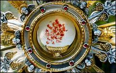

Ela nos introduz na intimidade da Vida
Trinitária, do PAI, do FILHO e do ESPÍRITO SANTO”. É um
dom gratuito e sobrenatural que o CRIADOR outorga as pessoas para a salvação
das almas, pelos méritos de NOSSO SENHOR JESUS CRISTO.
Ela nos introduz na intimidade da Vida
Trinitária, do PAI, do FILHO e do ESPÍRITO SANTO”. É um
dom gratuito e sobrenatural que o CRIADOR outorga as pessoas para a salvação
das almas, pelos méritos de NOSSO SENHOR JESUS CRISTO.
O Catecismo define a Graça como sendo
“uma participação na Vida de DEUS. Ela nos introduz na intimidade da Vida
Trinitária, do PAI, do FILHO e do ESPÍRITO SANTO”. É um
dom gratuito e sobrenatural que o CRIADOR outorga as pessoas para a salvação
das almas, pelos méritos de NOSSO SENHOR JESUS CRISTO.
Alcançar uma Graça significa receber um favor do PAI ETERNO, um socorro que o SENHOR nos concede. Ela é-nos dada objetivando capacitar-nos a responder ao convite Divino e procurarmos viver em santidade, exercitando em plenitude o “dom” de ser Filhos de DEUS, que recebemos no Sacramento do Batismo. Podemos dizer ainda, que a “Graça” é um favor ou uma aceitabilidade de DEUS, de acordo com a citação extraída no Antigo Testamento:
“Mas Noé encontrou graça aos olhos do SENHOR”. (Gn 6, 8)
Também no Novo Testamento, onde a citação mostra que a “Graça” é uma dádiva espontânea de DEUS, pela qual uma pessoa se torna aceita por ELE ou é por ELE auxiliada a fazer algo que seja agradável ao próprio DEUS. São Paulo dizia:
“Pela Graça de DEUS sou o que sou”. (1 Cor 15, 10)
A Graça é na realidade uma preciosa vocação para a Vida Eterna e por isso mesmo, depende integralmente da iniciativa de DEUS, pois somente ELE pode SE revelar ou SE dar a SI Mesmo.
A NECESSIDADE DA GRAÇA
Todas as pessoas são dotadas de inteligência e vontade e com uma natural inclinação para a verdade e o bem, apesar da interferência do maligno. Todavia, a verdade e o bem podem pertencer a duas esferas distintas: a natural e a sobrenatural, de acordo se for uma manifestação própria à natureza humana ou se pertencer a Vontade de DEUS.
Apesar do pecado Original e de suas conseqüências, a criatura humana pode conhecer, só com sua razão natural, as verdades naturais e a existência de DEUS. Mas evidentemente, para ter uma reta convicção, fugindo do erro e da heresia, é necessário o auxílio da Revelação Divina através da “Graça”. Isto porque, a Revelação é a autoridade de DEUS que infunde a fé, e como sabemos, a fé é um dom sobrenatural procedente da “Graça Divina”. Significa dizer que a “Graça” é imprescindível na vida de cada pessoa e absolutamente necessária à salvação eterna.
As pessoas recebem de DEUS pela primeira vez a “Graça Santificante” através do Sacramento do Batismo. Por essa razão, a Igreja recomenda que as crianças sejam Batizadas o mais cedo possível, a fim de que recebam desde o início do nascimento, as graças necessárias a sua vida.
SIGNIFICADO DA GRAÇA
Podemos inicialmente definir que a “Graça” tem dois significados: “Graça Santificante” e a “Graça Atual”.
A “Graça Santificante” é uma qualidade permanente que DEUS dá a alma, e que permanecerá nela, desde que ela não a destrua pelo pecado mortal. Este dom transforma a alma e a eleva a um plano sobrenatural, de tal modo que, uma pessoa em “estado de graça” tem preciosas prerrogativas:
1 – É santo e agradável a DEUS. (Hb 12,28)
2 – É chamado filho de DEUS. (1 Jo 3,1)
3 – É templo do ESPÍRITO SANTO. (1 Cor 3, 16)
4 – E em conseqüência, tem o privilégio de entrar no Céu.
Assim sendo, podemos afirmar que a “Graça Santificante” é uma nova vida dada por DEUS à alma. Uma vez que esta nova vida é uma participação criada pelo próprio DEUS, pode-se dizer que a alma com a Graça Santificante participa da Natureza Divina. (2 Pdr 1,4)
Também podemos afirmar que a Graça é o dom do ESPÍRITO SANTO que nos justifica e santifica, que nos faz agradável a DEUS e nos convida ao serviço da Caridade, e por conseguinte, nos torna participantes da Vida Divina.
A “Graça Atual” é um dom transitório, ou seja, é como se fosse uma “luz” para a mente ou uma “força”, um “estimulo” para a vontade, a fim de que a pessoa faça o bem e evite o pecado. Não é um dom permanente como a Graça Santificante. É um “impulso Divino” que ajuda cada um a fazer ações acima de suas forças naturais.
Como exemplo externo de “Graça Atual” pode-se mencionar: uma boa mãe, um lar cristão, um bom conselho de um confessor, um bom livro, no sentido de que, sob a providência de DEUS, as mencionadas citações ocasionam a prática de boas ações.
Além dos dois significados abordados acima, há que se considerar: a “Graça Sacramental” , a “Graça Habitual” e os “Carismas” ou “Graças Especiais”.
A “Graça Sacramental” é aquela recebida através de um Sacramento. É a Graça própria de um Sacramento e que só por ele pode ser conferida. Assim, cada um dos Sete Sacramentos, tem a sua Graça Especial. Para que o fiel receba os benefícios de uma Graça Santificante em plenitude, é necessário que ele esteja em “Estado de Graça”. Assim, ele deve recorrer ao Sacramento da Penitência, arrependendo-se de suas transgressões, para ser purificado pelos dons do ESPÍRITO SANTO.
“Graça Batismal” – É o conjunto de Graças recebidas pela alma do fiel no Batismo: a Graça Santificante, os dons do ESPÍRITO SANTO e as Virtudes Infusas (Virtudes Teologais: Fé, Esperança e Caridade); a Remissão de todos os pecados mortais e a santificação do batizando acompanham a Graça Santificante. Também redime todos os pecados veniais e a pena temporal devida aos pecados atuais; e ainda, o batizando recebe uma apreciável quantidade de Graças Atuais necessárias a poder cumprir os compromissos que assume ao receber o Sacramento, além de ser investido do caráter sacramental de “filho de DEUS”.
Na “Confirmação ou Crisma” – o ESPÍRITO SANTO infunde a Graça Santificante que ajuda a aumentar a fé e dá mais força, maior disposição e vontade ao fiel, ajudando a defendê-lo das insídias do maligno ao longo de sua existência.
Na “Eucaristia” – o ESPÍRITO SANTO nutre a alma do fiel com o Corpo, Sangue, Alma e Divindade do próprio DEUS Sacramentado, unindo-a ao SENHOR e infundindo nela a “Graça Maior” da presença Divina, propiciando uma indizível alegria interior e fazendo aumentar a fé, do mesmo modo que concedendo-lhe mais sabedoria, inteligência e disposição para o fiel continuar cumprindo dignamente a sua missão existencial.
Na “Confissão ou Penitência” – o ESPÍRITO SANTO derrama a Graça Santificante do perdão através do sacerdote, revigorando a energia e a fé, para que o fiel tenha mais perseverança e coragem de não transgredir a Lei de DEUS.
Na “Extrema-Unção” – o ESPÍRITO SANTO infunde a Graça Santificante, através da “Benção” e do “Santo Viático” (Sagrada Comunhão ministrada aos doentes e idosos), ajudando a superar as tentações da hora derradeira além de preparar a alma para sua entrada no Céu.
No “Sacramento da Ordem” – o ESPÍRITO SANTO derrama a Graça Santificante que confere a Ordenação Presbiteral, ajudando ao recém Ordenado-Sacerdote exercer convenientemente o culto Divino e a administrar os Sacramentos.
“Sacramento do Casamento ou Matrimônio” – o ESPÍRITO SANTO infunde a Graça Santificante nos esposos, ajudando-os a permanecerem fieis e a cumprirem com retidão os deveres do estado conjugal e a criarem cristãmente os seus filhos.
“Graça Habitual” – É outro nome dado a Graça Santificante, porque é uma Graça que permanece e habita na alma. Significa dizer que ela induz as ações se tornarem um hábito e não uma atividade isolada, ou apenas um impulso Divino para uma determinada ação. Por isso dizemos, quem tem a “Graça Habitual” está em “estado de Graça”. Exemplos: rezar o Terço ou o Rosário todos os dias; ir a Santa Missa todos os domingos; ler trechos da Bíblia Sagrada diariamente; etc.
Deve-se distinguir a “Graça Habitual”, que é uma disposição permanente para viver e agir conforme o chamado de DEUS, das “Graças Atuais”, que designam as intervenções Divinas, quer na origem da conversão, quer no decorrer da obra de santificação de cada pessoa.
“Carismas” ou “Graças Especiais” - São graças do ESPÍRITO SANTO que, direta ou indiretamente, têm uma utilidade eclesial, pois são ordenados à edificação da Igreja, ao bem dos homens e às necessidades do mundo. (Catecismo da Igreja)

“Há diversidade de dons, mas o ESPÍRITO é o mesmo; diversidade de ministérios, mas o SENHOR é o mesmo; diversos modos de ação, mas é o mesmo DEUS que realiza tudo em todos. Cada um recebe o dom de manifestar o ESPÍRITO para a utilidade de todos. A um o ESPÍRITO dá a mensagem da sabedoria; a outro a palavra da ciência segundo o mesmo ESPÍRITO; a outro, o mesmo ESPÍRITO dá a fé; a outro ainda o único e mesmo ESPÍRITO concede o dom das curas; a outro, o poder de fazer milagres; a outro a profecia; a outro, o discernimento dos espíritos; a outro, o dom de falar em línguas; a outro ainda, o dom de interpretá-las. Mas, isso tudo, é o único e mesmo ESPÍRITO que o realiza, distribuindo a cada um os seus dons, conforme LHE apraz”. (1Cor 12, 4-11).